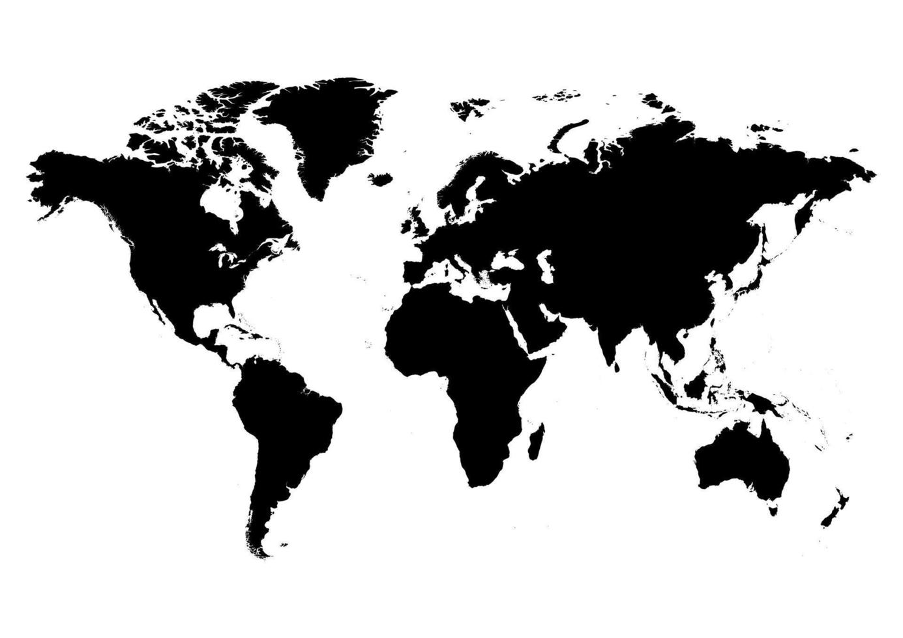

1.- "Planet B-Boy" (documental): Este documental sigue a diferentes equipos de breakdance de todo el mundo mientras se
preparan para la Batalla Mundial de Breakdance (Battle of the Year). Proporciona una visión interesante del mundo de las batallas de baile y la cultura hip-hop.
2.- Red Bull BC One: Red Bull BC One es una de las competiciones de breakdance más prestigiosas a nivel mundial.
Puedes visitar su sitio web oficial para obtener información sobre las reglas, competidores y eventos pasados y futuros.
3.- Juste Debout: Juste Debout es una competición internacional de danza urbana que se celebra anualmente en París, Francia.
Reúne a bailarines de diferentes estilos, como hip-hop, popping, locking, house y más. Visitar su sitio web te dará más información sobre las reglas y competidores.
4.- Battle of the Year: Battle of the Year es uno de los eventos más antiguos y reconocidos en la escena del breakdance.
Iniciado en Alemania en 1990, reúne a los mejores equipos de breakdance de todo el mundo para competir en una batalla de alto nivel.
5.- Dance competitions (competencias de baile): Hay muchas competiciones de baile en diferentes estilos y categorías en todo el mundo.
Algunas de las más conocidas incluyen World of Dance, Hip Hop International y Juste Debout. Estas competiciones a menudo tienen sus propias reglas y formatos, y pueden ser una excelente manera de ver y aprender sobre las batallas de baile.
6.- Freestyle Session: Freestyle Session es una serie de eventos de breakdance que se llevan a cabo en diferentes ciudades de todo el mundo.
Es conocida por su enfoque en las batallas de freestyle y ha sido una plataforma importante para los bailarines de breakdance desde su creación en 1997.
7.- UK B-Boy Championships: Esta competición anual de breakdance se celebra en el Reino Unido y reúne a algunos de los mejores bailarines de todo el mundo.
Es una de las competiciones más prestigiosas y cuenta con diversas categorías, incluyendo breakdance, popping, locking y más.
8.- Just Jam International: Just Jam International es un evento de danza urbana que se lleva a cabo en diferentes países.
Ofrece una plataforma para las batallas de diferentes estilos, como hip-hop, house, locking, popping y más. También incluye talleres y showcases de bailarines reconocidos.
9.- Battle Pro: Battle Pro es una competición internacional de breakdance que se celebra en Francia.
Atrae a destacados bailarines de todo el mundo y se enfoca en las batallas de breakdance, con múltiples categorías y premios para los ganadores.
10.- R16 Korea: R16 Korea es una competición de breakdance que tiene lugar en Corea del Sur.
Es parte de una serie de eventos que incluyen workshops, exhibiciones y batallas de breakdance. R16 Korea se ha convertido en uno de los eventos más importantes en la escena del breakdance a nivel mundial.
mapa de eventos de baile
